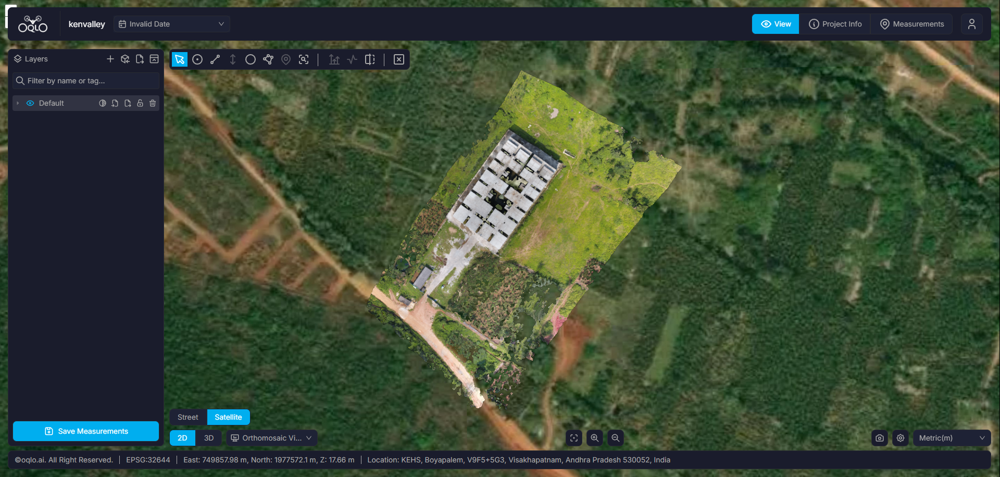
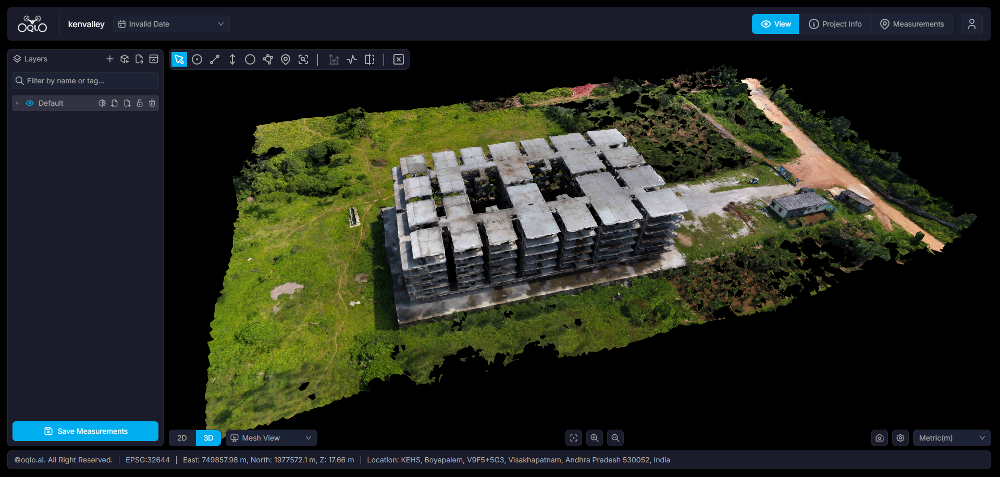

OQLO.AI
Initializing Spatial Data Platform
Loading...
0%
Accurate site intelligence, faster decisions, and construction progress you can trust from day one.
From flight mission planning in the field to actionable cloud-based geospatial intelligence.
Optimize mission planning and capture high-quality, accurate data with RTK/PPK geo-tagging for precise, reliable results.
Seamlessly process data from initial capture to secure storage, delivering refined, visualized datasets with advanced photogrammetry and web platform integration. Turn processed aerial data into actionable insights with advanced analytics for smarter decisions.
Get detailed survey reports of your land area. Customizable reporting options designed to adapt to various user needs, including CAD file generation and volumetric analysis.
End-to-end surveying, mapping, modeling, and analytics delivered through OQLO's unified platform.
High-resolution aerial data capture with RTK/PPK geo-tagging for centimeter-level precision and speed.
Cloud-based photogrammetry delivering true orthomosaics, 3D surface meshes, and spatial representations.
Interactive, dynamic digital replicas of physical assets to enhance planning, monitoring, and decision-making.
Pinpoint centimeter-level measurement tools for distances, elevation profiles, surface areas, and boundary layout.
Real-time site comparison and progress tracking to monitor changes over time, verify work, and prevent delays.
Comprehensive cut and fill calculations, earthwork verification, terrain classification, and elevation risk detection.
Automating spatial insights with AI-powered analytics to optimize site expenditure and save up to 80% on costs.
Customizable survey reports, elevation cross-sections, and executive summaries tailored to project requirements.
Direct generation of DXF and DWG linework files for seamless integration into AutoCAD, ArcGIS, and QGIS.
Inspect real-world survey layers captured and generated by OQLO's platform. Seamlessly toggle between high-resolution orthomosaics, dense 3D point clouds, elevation models, contour lines, and triangular meshes.
Accurate digital elevation representation for terrain modeling and cut/fill analysis.

OQLO.AI is a self-contained solution for fast, precise digital twin generation, offering a powerful cloud-based 3D reconstruction platform with exceptional accuracy.
Turn processed aerial data into actionable insights with advanced analytics, photogrammetry, and cloud integration.
Automatically detects and categorizes ground-based physical objects, structures, and surface materials.
Algorithms compute exact stockpile cut-and-fill volumes to optimize material tracking and prevent budget overruns.
Export precision 3D reality models directly into CAD linework, DXF, and DWG formats for seamless engineering workflows.

OQLO delivers geospatial solutions enabling precise land assessment and resource mapping across core industries.
Captures aerial data to track progress, verify grading and elevation leveling, monitor material stockpiles, and identify terrain risks early.
High-resolution crop monitoring, elevation verification for irrigation & water pipelines, and accurate boundary delimitation.
Tracks extraction site changes, verifies excavation grading, calculates stockpile and haulage volumes, and optimizes haul routes.
Accelerates smart city development with fast, detailed 3D spatial data for land use assessments and infrastructure planning.
Preserve historical monuments and cultural assets with millimeter-precision 3D digital twins, non-destructive inspection, and structural wear monitoring.
Uncover buried landscapes and document archaeological excavations with high-resolution aerial photogrammetry, elevation contours, and volumetric spatial tracking.
Real-world applications of drone surveying, digital twins, and AI spatial analytics across projects.
Precision drone surveys capture aerial data to accurately map and define the true boundaries of Coffee Estate.
Drone mapping offers a reliable method for tracking land transformation, capturing detailed elevation changes over time.
3D mapping provides real-time visualizations of site progress for better planning, stockpile audits, and decision-making.
Drone-powered 3D mapping accelerates smart city development by providing fast, accurate, and detailed spatial data.
Millimeter-accurate 3D digital twins and photogrammetry point clouds capture intricate monument architecture for digital archiving and restoration.
Transforming site surveying and geospatial workflows through precision drone technology and AI analytics.
At OQLO, we’re all about doing things differently! We're here to transform the way you tackle site surveys with our game-changing drone technology and our AI-powered smart platform. No more dragging through slow, outdated methods—we’re here to deliver speed, accuracy, and real cost savings!
We make your work simpler, faster, and way more efficient. Whether you're in construction, agriculture, or mining, we’ve got the tools to capture crystal-clear data and create dynamic digital twins for smarter decision-making.
Swift execution ensures timely delivery, efficiency, and project success without bottlenecks.
RTK/PPK geo-tagging guarantees pinpoint ~99% accuracy exceeding traditional land surveys.
With over a decade of expertise, Phanindra pioneers drone surveying, BIM, and GIS for digital twins, seamlessly blending innovation, client relations, and deep spatial tech domain knowledge.
The tech-savvy artist at OQLO, transforming real-world drone data into stunning digital twin realities, high-fidelity 3D meshes, and precision spatial models.
Real feedback from engineering, civil, and development leaders using OQLO.
“I was truly impressed with the drone-based survey conducted by Oqlo. The accuracy was outstanding, around 99%, which surpassed our expectations and what we could have achieved with a traditional survey. It was also much more efficient and cost-effective.”
“Oqlo’s drone services provided us with highly detailed site analysis and mapping, allowing us to make more informed decisions. The technology was seamless, and the team was very professional.”
“The comparison feature proved to be an invaluable tool for our construction project. The ability to accurately track stockpile levels in real-time enabled us to optimise our material management, prevent delays, and maintain consistent project progress.”
Experience pinpoint centimeter accuracy, dynamic digital twins, and AI spatial analytics tailored to your operations.